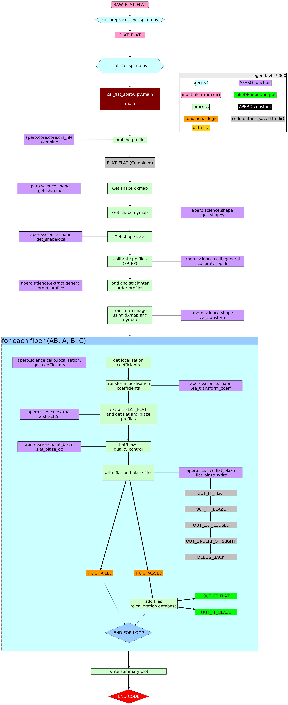

apero_flat_spirou recipe¶
1. Description¶
SHORTNAME: FF
No description set
2. Schematic¶
{kind=link}
3. Usage¶
apero_flat_spirou.py.py {obs_dir}[STRING] [FILE:FLAT_FLAT] {options}
{obs_dir}[STRING] // OBS_DIR_HELP
[FILE:FLAT_FLAT] // [STRING/STRINGS] A list of fits files to use separated by spaces. Current allowed types: FLAT_FLAT or DARK_FLAT or FLAT_DARK but not a mixture (exclusive)
4. Optional Arguments¶
--database[True/False] // [BOOLEAN] Whether to add outputs to calibration database
--badpixfile[FILE:BADPIX] // [STRING] Define a custom file to use for bad pixel correction. Checks for an absolute path and then checks directory
--badcorr[True/False] // [BOOLEAN] Whether to correct for the bad pixel file
--backsub[True/False] // [BOOLEAN] Whether to do background subtraction
--combine[True/False] // [BOOLEAN] Whether to combine fits files in file list or to process them separately
--darkfile[FILE:DARKM] // [STRING] The Dark file to use (CALIBDB=DARKM)
--darkcorr[True/False] // [BOOLEAN] Whether to correct for the dark file
--fiber[ALL,AB,A,B,C] // [STRING] Define which fibers to extract
--flipimage[None,x,y,both] // [BOOLEAN] Whether to flip fits image
--fluxunits[ADU/s,e-] // [STRING] Output units for flux
--locofile[FILE:LOC_LOCO] // [STRING] Sets the LOCO file used to get the coefficients (CALIBDB=LOC_{fiber})
--orderpfile[FILE:LOC_ORDERP] // [STRING] Sets the Order Profile file used to get the coefficients (CALIBDB=ORDER_PROFILE_{fiber}
--plot[-1>INT>2] // [INTEGER] Plot level. 0 = off, 1 = interactively, 2 = save to file
--resize[True/False] // [BOOLEAN] Whether to resize image
--shapex[FILE:SHAPE_X] // [STRING] Sets the SHAPE DXMAP file used to get the dx correction map (CALIBDB=SHAPEX)
--shapey[FILE:SHAPE_Y] // [STRING] Sets the SHAPE DYMAP file used to get the dy correction map (CALIBDB=SHAPEY)
--shapel[FILE:SHAPEL] // [STRING] Sets the SHAPE local file used to get the local transforms (CALIBDB = SHAPEL)
5. Special Arguments¶
--debug[STRING] // Activates debug mode (Advanced mode [INTEGER] value must be an integer greater than 0, setting the debug level)
--listing[STRING] // Lists the night name directories in the input directory if used without a 'directory' argument or lists the files in the given 'directory' (if defined). Only lists up to 15 files/directories
--listingall[STRING] // Lists ALL the night name directories in the input directory if used without a 'directory' argument or lists the files in the given 'directory' (if defined)
--version[STRING] // Displays the current version of this recipe.
--info[STRING] // Displays the short version of the help menu
--program[STRING] // [STRING] The name of the program to display and use (mostly for logging purpose) log becomes date | {THIS STRING} | Message
--recipe_kind[STRING] // [STRING] The recipe kind for this recipe run (normally only used in apero_processing.py)
--parallel[STRING] // [BOOL] If True this is a run in parellel - disable some features (normally only used in apero_processing.py)
--shortname[STRING] // [STRING] Set a shortname for a recipe to distinguish it from other runs - this is mainly for use with apero processing but will appear in the log database
--idebug[STRING] // [BOOLEAN] If True always returns to ipython (or python) at end (via ipdb or pdb)
--master[STRING] // If set then recipe is a master recipe (e.g. master recipes write to calibration database as master calibrations)
--quiet[STRING] // Run recipe without start up text
--force_indir[STRING] // [STRING] Force the default input directory (Normally set by recipe)
--force_outdir[STRING] // [STRING] Force the default output directory (Normally set by recipe)
6. Output directory¶
DRS_DATA_REDUC // Default: "red" directory
7. Output files¶
name |
HDR[DRSOUTID] |
file type |
suffix |
fibers |
dbname |
dbkey |
input file |
|---|---|---|---|---|---|---|---|
FF_FLAT |
FF_FLAT |
.fits |
_flat |
AB, A, B, C |
calibration |
FLAT |
FLAT_FLAT |
FF_BLAZE |
FF_BLAZE |
.fits |
_blaze |
AB, A, B, C |
calibration |
BLAZE |
FLAT_FLAT |
EXT_E2DS_LL |
EXT_E2DS_LL |
.fits |
_e2dsll |
AB, A, B, C |
– |
– |
DRS_PP, FLAT_FLAT |
ORDERP_STRAIGHT |
– |
.npy |
_orderps |
AB, A, B, C |
– |
– |
SHAPEL |
DEBUG_BACK |
DEBUG_BACK |
.fits |
_background.fits |
– |
– |
– |
DRS_PP |
8. Debug plots¶
FLAT_ORDER_FIT_EDGES1
FLAT_ORDER_FIT_EDGES2
FLAT_BLAZE_ORDER1
FLAT_BLAZE_ORDER2
9. Summary plots¶
SUM_FLAT_ORDER_FIT_EDGES
SUM_FLAT_BLAZE_ORDER